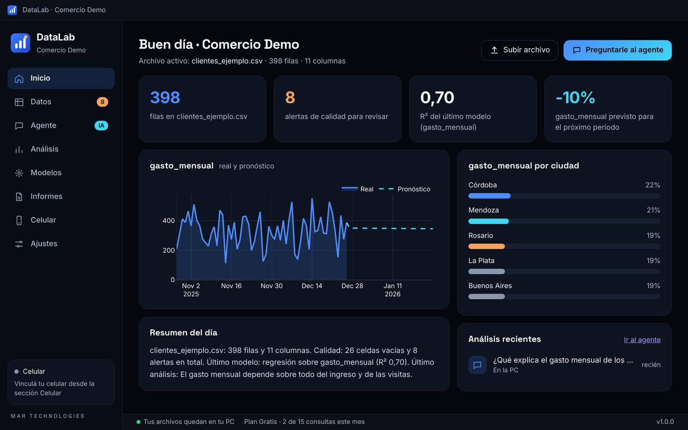
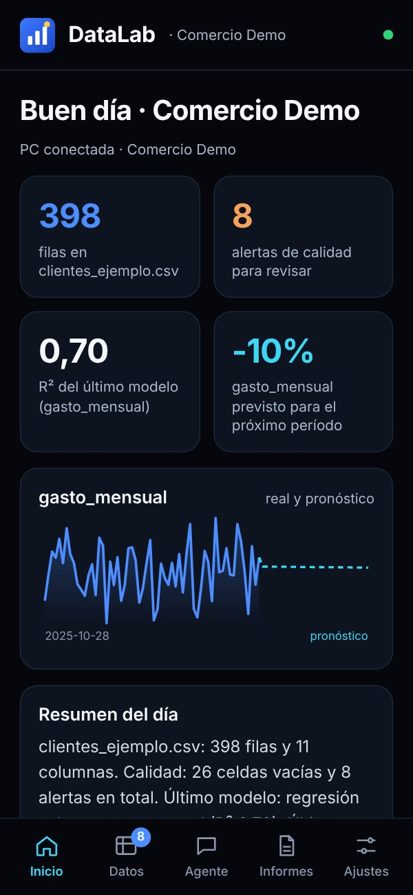
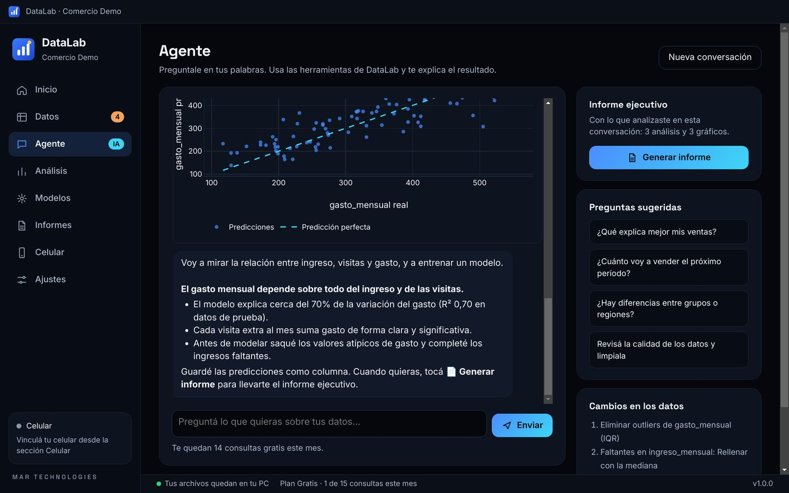
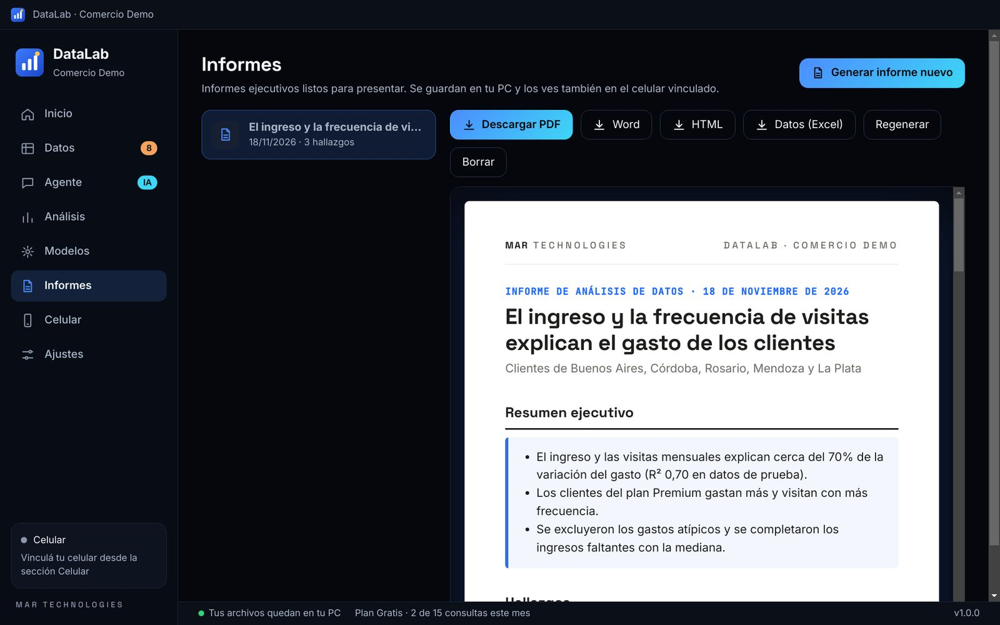
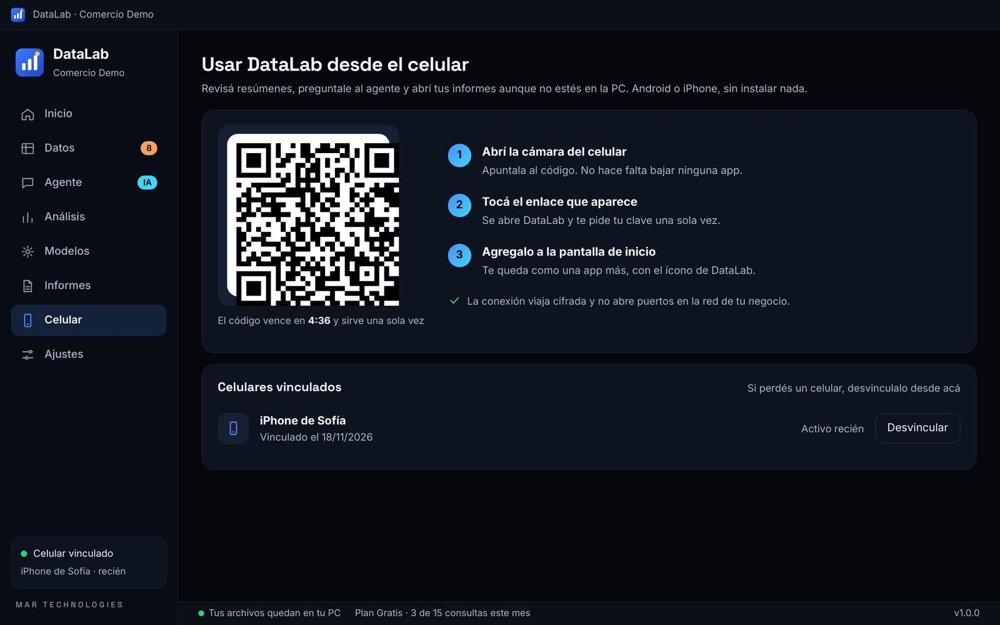
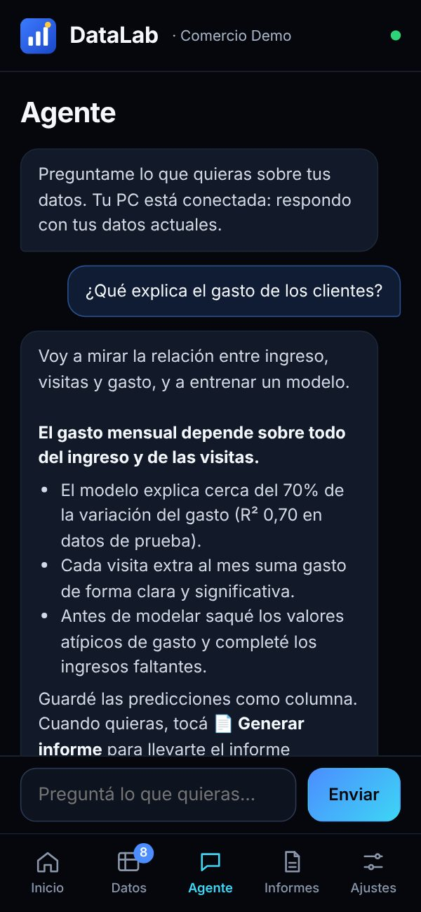
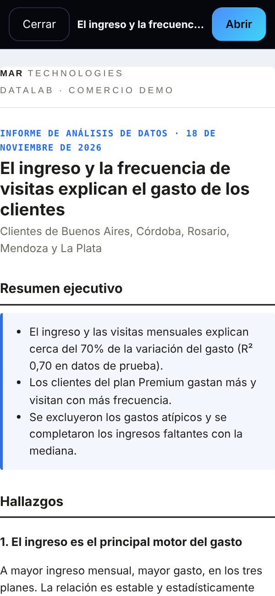
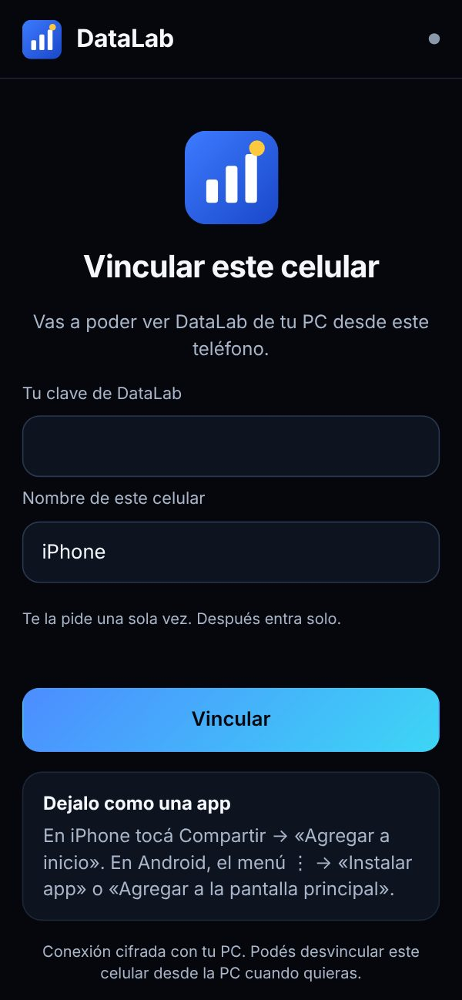

// DATALAB · NUEVO
Tus datos, analizados por un agente de IA.
DataLab es un analista de datos que se instala en la PC de tu negocio y se usa también desde el celular. Subís tu Excel o CSV de ventas, clientes o stock, le preguntás en tus palabras qué querés saber y te responde con gráficos, pruebas estadísticas y modelos. Al final te arma un informe ejecutivo listo para presentar.
Windows 10 u 11 · Sin tarjeta para empezar · Celular Android o iPhone sin instalar nada


// QUÉ HACE
El trabajo de un analista, en tu PC



Imágenes con datos de ejemplo.
Lo que te llevás
INFORME EJECUTIVO
PDF listo para la reunión
La conclusión principal arriba, de 3 a 6 hallazgos con su gráfico y qué hacer con cada uno, y qué tan confiable es cada resultado.
DATOS
Tu archivo limpio y con predicciones
Descargás el dataset procesado en Excel, con columnas nuevas como la probabilidad de compra o de baja de cada cliente.
ANEXO TÉCNICO
Metodología y limitaciones
Qué datos se usaron, cómo se prepararon, qué técnicas y métricas. Para que cualquier analista lo pueda revisar.
Y si no estás en la compu, lo ves en el celular
¿Saliste corriendo o estás de viaje? DataLab queda vinculado a tu PC y lo abrís desde el teléfono: ves el resumen, le preguntás al agente y abrís tus informes. Funciona en Android y iPhone, sin bajar ninguna app.



Para preguntarle al agente desde el celular, DataLab tiene que estar abierto en la PC. Si la PC está apagada, igual ves el último resumen y tus informes.
Seguro por diseño
- Tus archivos quedan en tu PC. El Excel o CSV no se sube a ningún servidor. Para que lo veas en el celular, se sincroniza solo un resumen (columnas, totales y alertas) y los informes que generás.
- Celular vinculado con QR de un solo uso. El código vence a los 5 minutos y cada teléfono se puede desvincular desde la PC si lo perdés.
- Nada es irreversible: cada paso de limpieza queda en el historial y se puede deshacer.
- Resultados con fundamento: el agente solo informa números que salen de los análisis y aclara sus limitaciones.
Precio
GRATIS
$0
15 consultas al agente por mes, todas las herramientas, el informe ejecutivo y el celular vinculado. Sin tarjeta.
PRO · PRECIO DE LANZAMIENTO
$15.000 / mes
400 consultas por mes para trabajar todos los días.
Suscripción mensual con Mercado Pago: se cobra sola y la cancelás cuando quieras desde la app. Una consulta es cada mensaje que le mandás al agente, desde la PC o el celular; generar un informe cuenta como una consulta. Precios en pesos argentinos.
Cómo empezás
- Descargá DataLab (Windows 10 u 11).
- Doble clic en DataLab-Setup. Elegí la carpeta y los accesos directos, y tocá Instalar. Si Windows muestra «Windows protegió su PC», tocá «Más información» → «Ejecutar de todas formas».
- Creá tu cuenta y subí tu Excel o CSV. ¿No tenés uno a mano? Usá el dataset de ejemplo.
- Para el celular: en DataLab entrá en Celular y escaneá el código QR con la cámara del teléfono.
Las actualizaciones llegan solas.
Descargar DataLab →¿Preferís que lo hagamos por vos? Escribinos
Preguntas frecuentes
¿Necesito saber estadística o programar?
No. Le preguntás como a una persona y te responde en lenguaje claro. Si querés el detalle técnico, está en las pestañas de la app y en el anexo del informe.
¿Qué tan grandes pueden ser los archivos?
Funciona bien con planillas de hasta decenas de miles de filas, según la memoria de tu PC.
¿Puedo confiar en los resultados?
Los cálculos los hace el programa con métodos estadísticos estándar, y el agente solo informa lo que sale de ellos. Igual, las conclusiones son orientativas: validalas con tu conocimiento del negocio antes de tomar decisiones importantes.
Soporte técnico
¿Algo no anda o tenés una duda? Escribinos o llamanos. Lunes a viernes de 8 a 17 h.
WhatsApp +54 9 11 2675-9958Llamarinfo@martechnologies.ar
Más detalle en los Términos y condiciones y la Política de privacidad.